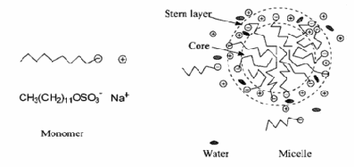

Association of colloids also known as micelles are formed by aggregation of some special kinds of long chain hydrocarbon molecules and block co-polymers. They find many applications from day-today life to industry.

To study about Micelle formation and observe the Cleansing action of Soap.

There are some molecules which are made of a lyophilic (solvent loving) as well as a lyophobic (solvent hating) part or a polar and a nonpolar part. These molecules are known as amphiphilic or amphipathic and can reduce surface tension of water and therefore known as surface-active agents (also as surfactants) such as soaps and synthetic detergents. Often the lyophilic part is ionic in nature. These molecules when dissolved in a solvent (water) behave as strong electrolytes at low concentration. If this dissolution takes place above a particular temperature, called Kraft temperature, when one dissolves more and more of these molecules, above a particular concentration (called critical micelle concentration, CMC) these molecules tend to form aggregated (associated) particulate structures. These associated structures are called micelles in solvent water and called reverse micelles or inverted micelles in organic solvent. Micelles have a lyophilic as well as lyophobic part. The CMC is about 10-4 to 10-3 mol L-1. The number of molecules present in a micelle is called the aggregation number. A micelle may consist of 50 to 100 molecules. For example, sodium dodecyl sulfate (SDS) or sodium lauryl sulfate (SLS) micelle in water has a CMC 8.1 ×10-3 mol L-1 and an aggregation number of ~80. It is to be noted that micelles are dynamic structures and there are always exchange of molecules among different micelles.
Surface-active molecules have two parts: a non-polar long hydrocarbon (R) chain called tail, which is hydrophobic (water repelling) and a polar hydrophilic (water loving) group called head group. Micelles can be cationic, anionic and nonionic, if the head groups of the micelle forming molecules are cationic, anionic and neutral, respectively. SDS (sodium dodecyl sulfate), CTAB (cetyltrimethylammonium bromide), and Triton X-100 are examples of anionic, cationic and neutral surfactants, respectively. In water, the non-polar hydrocarbon tails of the surfactant molecule being water hating tend to orient away from water while the head groups being water loving interact with water. Above a critical concentration, these molecules form structures with an oily aggregate at the center by pointing hydrocarbon chains away from water and polar head groups outwards towards water (Figure 1). Ionic micelles have counter ions surrounding the micelle. Sodium lauryl sulfate is a synthetic anionic detergent used in toothpastes, shampoos, and laundry soaps. Many cationic detergents have germicidal properties and are used in hospital disinfectants, mouthwashes and certain eyewetting solutions.
Cleansing action of soap and detergents. The core of the micellar structure is nonpolar in nature whereas area near the head groups is polar in nature. Due to this dual nature, micelles can dissolve organic, nonpolar substances in its core as well as polar substances near the head groups. The cleansing action of soaps and detergents is based upon their ability to form micelles and dissolving oily, greasy materials into their cores. Thus micelles formed from soap or detergent molecules trap dirt particles and get separated from skin or fabric and pass into washing solvent water.


- Even when the head groups are ionic and they are supposed to repel each other, stable micelles form. Why?
- What will be the effects of larger head groups on micellar structure and aggregation number?
- How will the surface tension of a solution vary with the increase in surfactant concentration and why?
- Why do the organic substances dissolve into the core of the micelles?

- P.W. Atkins and Julio de Paula, Physical Chemsitry, Oxford University Press, 7th ed., (2002)
- Moroi Y. Micells: Springer (2005)
- J. W. McBain, Colloid Science, D.C. Heath and Company, Boston (1950)
- R. J. Hunter; Foundation of Colloid Science, Oxford University Press (2000)
 Experiments
Experiments Feedback
Feedback